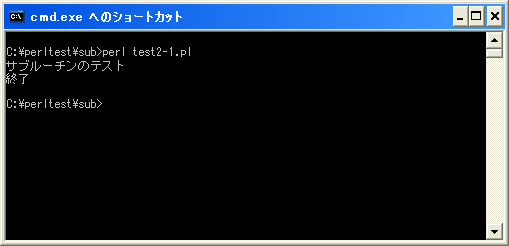

サブルーチンの定義
ではサブルーチンの定義方法から確認していきます。書式は次の通りです。
sub サブルーチン名{
実行する処理;
}
サブルーチンは「sub」の後に空白を1文字空けてからサブルーチン名を記述します。そしてサブルーチンで実行する処理を「{」から「}」で囲まれたブロック中に記述して行きます。実行される処理は複数記述することが出来ます。
サブルーチン名として記述する名前は変数と同じくアルファベット・数字・アンダーバー("_")が使用できます。ただし先頭に数字は使用できません。
サブルーチン内には実行する処理を記述していきます。必須ではありませんが、各行の先頭はインデント(字下げ)してどこからどこまでがブロック内の処理なのか視覚的に分かるように記述します。
サブルーチンの定義位置
サブルーチンはプログラム中のどこで定義しても構いません。一般的にはプログラム内の先頭や最後にまとめて定義します。
print "サブルーチンのテスト¥n";
sub hello{
print "hello¥n";
}
sub bye{
print "bye¥n";
}
上記の場合は2個のサブルーチンをプログラム内の最後に続けて定義しています。このようにサブルーチンはプログラム中に複数定義することが可能です。
サブルーチンはいつ実行されるか
Perlのプログラムは処理を記述した順に上から下へ順に実行されていきますが、サブルーチン内に記述された処理はプログラム内からサブルーチンを呼び出さない限り実行されません。
例えば次のようなプログラムで考えてみます。
sub hello{
print "hello¥n";
}
print "サブルーチンのテスト¥n";
sub bye{
print "bye¥n";
}
print "終了¥n";
このプログラムではまずサブルーチンが定義されていますが、サブルーチンのブロック内で記述された処理は実行されません。その為、「print "サブルーチンのテスト¥n";」がまず実行され、その次に「print "終了¥n";」が実行されてプログラムは終了します。
このようにサブルーチン内の処理はサブルーチンが呼び出されない限り実行されません。(ただし先ほど記述した通り、サブルーチンは最初か最後にまとめておいた方が分かりやすいプログラムになります)。
サンプルプログラム
では簡単なプログラムで確認して見ます。
use strict;
use warnings;
use utf8;
binmode STDIN, ':encoding(cp932)';
binmode STDOUT, ':encoding(cp932)';
binmode STDERR, ':encoding(cp932)';
sub hello{
print "hello¥n";
}
print "サブルーチンのテスト¥n";
sub bye{
print "bye¥n";
}
print "終了¥n";
上記を「test2-1.pl」の名前で保存します(文字コードはUTF-8です)。そしてコマンドプロンプトを起動し、プログラムを保存したディレクトリに移動してから次のように実行して下さい。

( Written by Tatsuo Ikura )

著者 / TATSUO IKURA
初心者～中級者の方を対象としたプログラミング方法や開発環境の構築の解説を行うサイトの運営を行っています。